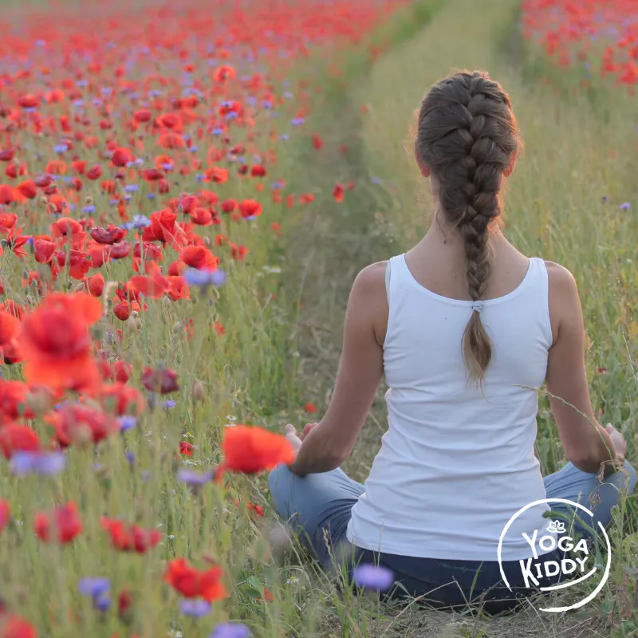

La naturaleza y la infancia son una combinación infinitamente hermosa, ya que nos permite responder a la necesidad sensorial que poseen, pudiendo facilitar experiencias sensoriales significativas para un desarrollo integral.
La naturaleza es como un juguete nuevo para ellos y ellas, donde se encuentran con un sin fin de posibilidades para descubrir, algo que les fascina.
El contacto con lo simple de la naturaleza, los árboles, flores, ríos, lagos y todo lo infinito que existe en ella, es una posibilidad para que descubran y aprendan a amar el lugar donde vivimos.
Para que la valoren, debemos brindarles la posibilidad de que la descubran, la exploren, la reconozcan, la disfruten…
El trepar árboles, subir montañas, jugar con tierra, caminar entre piedras, abrazar árboles, recolectar semillas, escuchar el sonido del mar, crear castillos de arena, chapotear en los charcos de barro y todo lo que se pueden hacer en la naturaleza, les permite favorecer su desarrollo cognitivo fomentando las conexiones neurológicas, además de brindarles la posibilidad de escucha y reconocimiento emocional, estimulación de capacidades creativas, junto con mejorar la calidad de vida; mejorando la salud pulmonar, estimulando la actividad física y mucho más.
El yoga es una posibilidad de educar en muchos aspectos, sobre todo en dimensiones que nos vuelven seres más sensibles a la existencia y de cómo podemos colaborar para llevar una vida más consciente y respetuosa con nosotros/as mismos y nuestro entorno.
Por medio de yoga infantil, podemos abrir la puerta para el descubrimiento de las maravillosas bondades que nos regala la naturaleza y cómo ellas se amplifican cuando estamos receptivos/as a ello y su lenguaje.
¿Has disfrutado de los colores de un bosque?
¿Te has asombrado por la inmensidad del mar?
¿Te ha silenciado la grandiosidad de una montaña?
¿Te ha cautivado el sonido de un río?…
Si bien, nuestra clase gran parte se lleva a cabo dentro de un espacio cerrado, podemos dentro de las posibilidades trasladarla a un parque, una plaza, una playa, etc para vivenciar las dinámicas en un entorno natural. Aquí entran en juego otros elementos, tales como: escuchar el sonido ambiente, utilizar las texturas que nos rodean, observar lo que nos rodea, etc.
De no ser posible, podemos jugar con nuestra imaginación y por sobre todo educar en la importancia del vínculo con ella.
¿Cómo hacerlo?
De muchas maneras…
Por medio de cuentos, imaginerías, etc.
Esta vez te compartiré recursos musicales para ello.